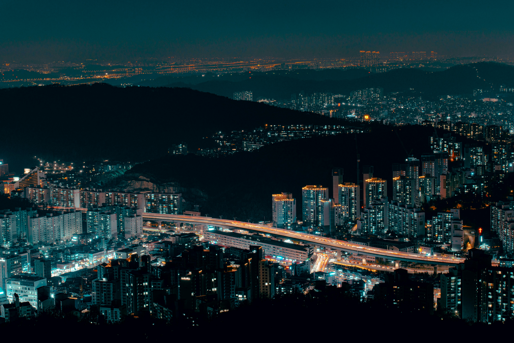
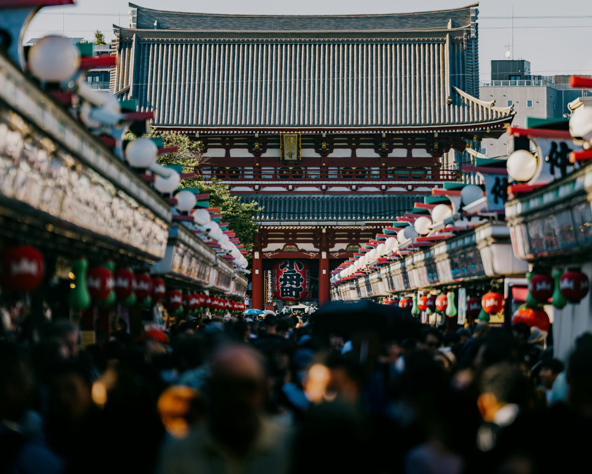
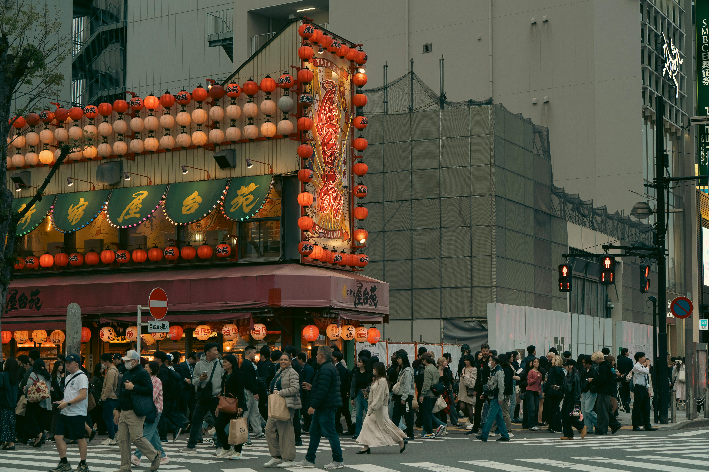
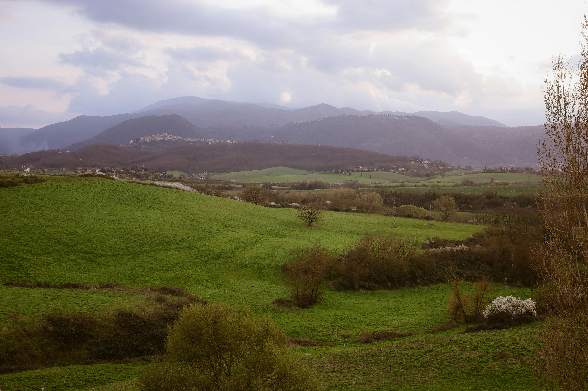
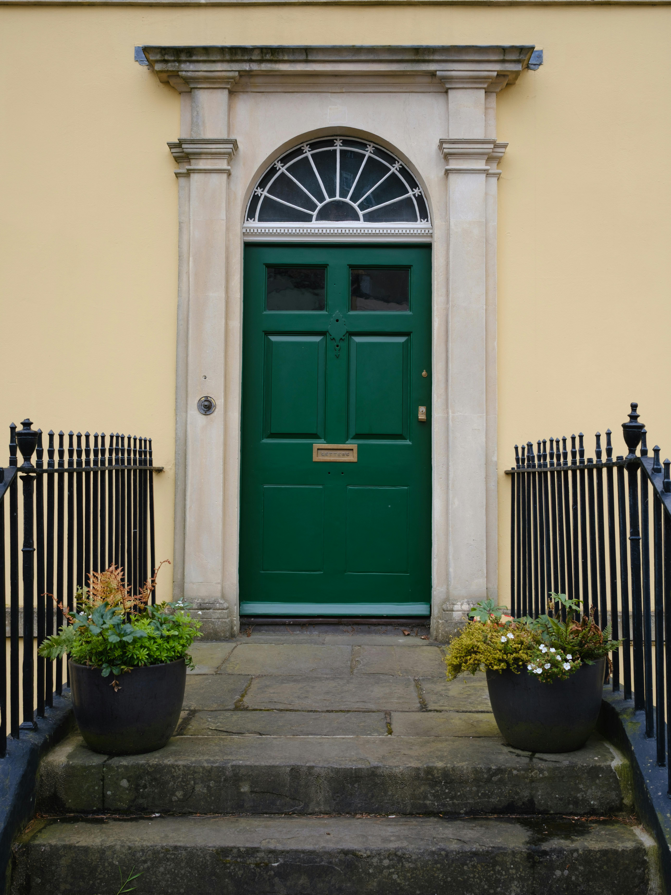

Three weeks tracing the slow seam where dense, sleepless cities give way to quiet green country — and the small doors that open onto both.
There is a particular hour, just after the streetlights win out over the dusk, when a city looks less like a place and more like a circuit board left running overnight. We began there — on a ridge above a valley of ten million lit windows — and spent the next three weeks walking ourselves back down to silence.
The plan, if you could call it that, was to never fly between two stops if a train, a ferry, or a long bus could carry us instead. The reward for that stubbornness is the in-between: the rice terraces that blur past the window, the harbor towns nobody books a hotel in, the conversations with people who are surprised you came their way at all. What follows is part diary, part field guide — take the parts that fit your own long way round.
From the overlook the metropolis read as a single organism, its arteries the expressways threading the valley floor, pulsing white one way and red the other. We'd hiked up in the late afternoon precisely for this — to watch the switch flip, building by building, until the dark hillside below us was the only thing left unlit. Down in it the next morning, the scale rearranged itself into something human again: a bakery, a barber, a stationery shop that had clearly outlasted three recessions.
A skyline is a promise a city makes from a distance. The streets are where it tells you the truth.
By six in the evening the great gate had emptied of its daytime crowds and refilled with a softer one — locals on the way home, students photographing lanterns, a vendor folding away the last of the rice crackers. The temple approach glowed amber under hundreds of paper lamps, each one a small warm argument against the coming night.

A few blocks on, the side streets did what side streets everywhere do best — they got weird and wonderful. A corner izakaya wore its entire facade in lanterns, red on red on red, while the evening commute streamed across the intersection in front of it, indifferent and constant.

It takes the body a few days to recalibrate after a city like that. The countryside doesn't announce itself; it just slowly removes things — first the billboards, then the traffic, then, somewhere past the last suburb, the noise itself. By the time we reached the hills the loudest sound was wind moving through grass.

In the country you stop counting hours and start counting weather. The day is bright, then it isn't, then it is again.
We stayed in a stone farmhouse with thick walls and uneven floors, and woke each morning to a view that hadn't changed in two hundred years. We walked. That was the whole itinerary, most days — down to the village for bread, up the ridge to see how far the valley ran, back before the afternoon clouds rolled their shadows across the green.
If there is a single image I kept returning my camera to, it was doors. A door is where a place decides how to greet you. The last leg took us through a town of tall townhouses, each with a painted door set in pale stone — and behind one of them, a host who insisted we stay for a second pot of tea we did not need and have never forgotten.

The door was the deep green of a holly leaf, with a fan of glass above it catching the gray afternoon light and a pair of planters standing guard on the worn stone steps. It looked like a hundred others on the street and like nothing else in the world, which is exactly the contradiction travel keeps teaching you.
| Leg | Where | By | Nights |
|---|---|---|---|
| 01 | Hilltop city & the ridge overlook | Train + foot | 4 |
| 02 | The old temple district | Metro | 3 |
| 03 | Coastal ferry crossing | Overnight ferry | 1 |
| 04 | The green valley & stone farmhouse | Regional bus | 6 |
| 05 | The townhouse street & the green door | Train + foot | 4 |
We ended where every good trip ends — not at a destination, but at a doorstep, packs heavier with film and lighter with certainty. The cities had given us their noise and their neon; the hills had given the silence back. Somewhere in the long way between the two, the journey had quietly become the point. So take the slow boat. Climb the ridge for the free view. Knock on the green door. The map is only ever a suggestion — the real route is the one you walk.